|
|
| bivalves text index | photo index |
| Phylum Mollusca > Class Bivalvia |
| Bivalves or clams Class Bivalvia updated May 2020
Where seen? Bivalves are commonly seen on almost all our shores. Sandy and muddy shores are particularly rich in buried bivalves, seagrass meadows are also teeming with them. On rocky shores, bivalves such as oysters are permanently stuck to hard surfaces. While on reefs, magnificent bivalves such as giant clams may be encountered. What are bivalves? Bivalves are molluscs (Phylum Mollusca) that belong to Class Bivalvia. Bivalves include clams, mussels and oysters. There are about 7,000 species of bivalves. They come in an amazing variety of shapes! |
 The Hammer oyster is a bivalve! Cyrene Reef, Jul 09 |
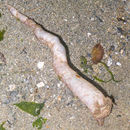 The Watering pot shell is a bivalve! Changi, Jul 07 |
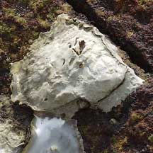 Oysters have a two-part shell too. Chek Jawa, May 04 |
| Two shells? 'Bivalve' means 'two
valves'. Actually, a bivalve has one shell. It is more correct to
say that it has a two-part shell, i.e., one shell made up of two parts.
Each part of the shell is called a valve. The valves are connected by a hinge and kept shut by one or two large muscles (called adductor muscles). When the bivalve relaxes its adductor muscles, a springy ligament causes the two valves to open. In many bivalves, the hinge between the two valves have teeth to prevent the valves from slipping sideways. This keeps the valves well aligned, thus providing a tight seal when the valves are shut. The Gladys Archerd Shell Collection website has a labelled photo of parts of a typical bivalve. For some of our favourite seafood such as scallops, it is the adductor muscles that we eat and not the body of the animal. These muscles taste sweet because of the proteins found there. |
 |
| Life in the slow lane: Bivalves are mostly sedentary and don't move about as much as most
gastropods. Many are adapted to live buried in soft sea bottoms, some
live permanently attached to a hard surface. Being mostly immobile,
peaceful filter-feeders, most bivalves don't have a head or a radula.
Burrowing bivalves have a flattened, blade-like foot to burrow with.
Oysters that stick to hard surfaces don't even have a foot. Some bivalves
like scallops, however,
can 'swim' for a short distance by clapping their shells together. Some bivalves have a long strong foot that they can use to 'leap' away from danger. Others may use the foot to creep slowly or reposition themselves. Sometimes confused with barnacles and limpets. Here's more on how to tell apart animals with conical shells stuck on rocks. |
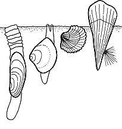 A wide variety of bivalves bury themselves in sand or mud. |
 The Scintilla clam uses its foot to creep around or even 'jump'. Terumbu Semakau, Jun 12 |
 The magnificent Swimming file clam. Terumbu Pempang Tengah, Jul 12 |
| Sanctuary in the sand: Most bivalves
bury themselves. Here they are safer from predators and keep cool
and moist during low tide. They use their foot to burrow, then stick
out two siphons to the surface. Water is sucked in through one siphon,
and ejected through the other. How do they dig in? A bivalve has only one foot and no other limbs. Yet, it can dig into the sand, and some can do it very rapidly indeed! To dig in, the fleshy foot sticks out between the valves. The end of the foot is then expanded into a bulbous shape to form an anchor in the sand or mud. Water is then expelled from between the valves to loosen the sand and mud and the bivalve then quickly contracts its foot to pull itself deeper in. It does this repeatedly until it is at a comfortable depth. Different bivalves bury themselves to different depths. Those with more streamlined shapes dig deeper. |
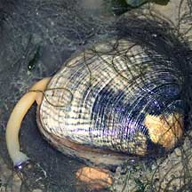 Clams have siphons that extend out of their shells. Changi, Feb 02 |
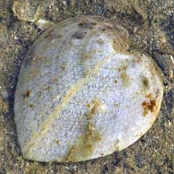 The Heart cockle has translucent 'windows' in its shell to let light into its symbiotic algae. Pulau Semakau, Feb 09 |
 Fleshy body of the Burrowing giant clam is exposed to the sunlight. Pulau Hantu, Feb 06 |
| Bivalve food: Most bivalves use
their enlarged mantle cavity to suck water in and to filter out the
titbits from the water flow. Cilia (beating hairs) on their gills
generate a current through the gills. Mucus on the gills traps food
particles which are sent along a groove to the mouth. Fleshy pads
near the mouth then push the mucus-food mixture into the mouth. The
gills also extract oxygen from the water. Oysters and mussels that do not bury themselves simply open their shells a little to get a current going through their bodies. Burying bivalves usually have a pair of siphons, tubes made out of extensions of the mantle. These stick out onto the surface for a one-way flow of water; water enters one siphon and exits the other. In some, these siphons can be quite long so that the bivalve can remain deeply buried and still feed and breathe. The Gladys Archerd Shell Collection website has a diagram and description of how bivalves feed. Some bivalves, like the Giant clam and Heart cockle, harbour symbiotic zooxanthellae (a kind of single-celled algae) in its body. The zooxanthellae produce food through photosynthesis which it shares with the clam. |
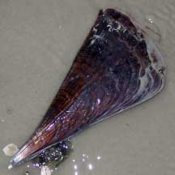 The Fan shell uses byssus threads to anchor itself deep the sand. Chek Jawa, Nov 01 |
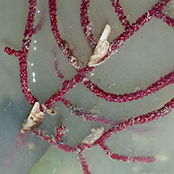 These bivalves use byssus threads to attach to sea fans. Changi, Jan 13 |
 These tiny Nest mussels formed vast beds on Chek Jawa in 2007 Chek Jawa, Aug 07 |
| Hanging by a thread: Many bivalves secrete byssus threads, strong protein fibres that can be used to cement themselves to hard surfaces and supports. Burying bivalves may use byssus threads to literally root themselves to the surrounding sand or small stones. The thread is produced by a gland near the foot. The foot gets a grip of the surface and the secretion from the gland flows along a groove in the foot. When the secretion hardens on contact with sea water, the foot is withdrawn. Some clams like Nest mussels create a dense mat out of byssus threads in which they live. Byssus threads are extensively studied to better understand how to create similarly strong synthesic threads. |
 The Giant clam is among our largest bivalves. Pulau Hantu, Aug 03 |
 The tiny Coral clam lives in living hard corals. Tanah Merah, Jun 11 |
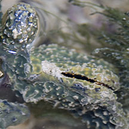 Sponge finger oyster mbedded in a sponge. Terumbu Pempang Laut, May 12 |
| Bizarre Bivalves: Bivalves come
in a vast array of shapes and forms. Some like Nest
mussels, are 1cm long or less but can form vast 'nests'. Yet others
like the Giant clam (Family Tridacnidae) are enormous and can reach nearly half a metre
in length. Some clams live inside other animals - the Sponge finger oyster lives in sponges. Bivalve babies: Most bivalves have separate genders. Bivalves generally practice external fertilisation, releasing their eggs and sperm simultaneously into the water. Most undergo metamorphosis and their larvae look nothing like their adults. Free-swimming larvae develop, drifting with the plankton. These may change as they float, developing a small shell. Eventually, they settle down and develop into miniatures of their parents. |
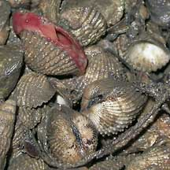 Ark clams are among our favourite seafood! Changi, Jul 02 |
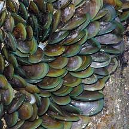 Mussels are also among our favourites!. Changi, Jan 04 |
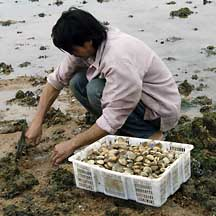 Venus clams being harvested for eating. Pulau Sekudu, Jul 03 |
| Human uses: Bivalves are among
our favourite seafood. These include Ark
clams, Oysters, Green mussels, Venus
clams and tragically, even the large, beautiful Giant
clams. Although all molluscs can produce pearls, pearls used commercially
come mostly from farmed and not wild bivalves. Please don't vandalise
our wild clams in the vain hope of finding valuable pearls. Clam Calamity: Bivalves that are ordinarily safe to eat can, at some seasons, be highly poisonous to eat. For example, this happens during a red tide or harmful algal bloom. Filter-feeding animals such as bivalves concentrate the toxins produced by these organisms. The toxins do not harm the bivalves, but can be fatal to humans and other animals such as otters that eat the bivalves. The toxins are not destroyed by cooking. At other times, filter feeding bivalves may also concentrate other unpleasant chemicals and bacteria which could make you ill. Status and threats: Sadly, many of our beautiful and fascinating bivalves are listed among the threatened animals of Singapore. Like other marine creatures, they are vulnerable to habitat loss due to reclamation or human activities along the coast that pollute the water. They are also vulnerable to trampling by careless visitors and over-collection for food and for their shells can affect local populations. |
shared by Neo Mei Lin on her blog |
| Bivalves
recorded for Singapore Text index and photo index of molluscs on this site list of threatened molluscs in Singapore |
Links
|